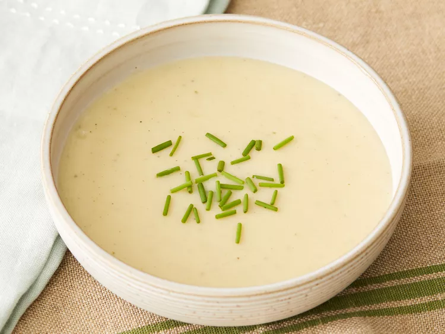

Classic Vichyssoise

This vichyssoise is a very simple recipe that tastes great. What could be better? Serve cold or warm.
Ingredients
- 1 tablespoon butter
- 3 leeks, bulb only, sliced into rings
- 1 onion, sliced
- 5 medium potatoes, peeled and thinly sliced
- salt and pepper to taste
- ½ teaspoon dried marjoram
- ¼ teaspoon dried thyme
- 1 bay leaf
- 5 cups chicken broth
- ¼ cup heavy whipping cream
Steps
- Melt butter in a large stockpot over low heat. Add leeks and onion; cover and cook for 10 minutes.
- Stir in potatoes; season with salt and pepper. Add marjoram, thyme, and bay leaf; stir well. Cover and cook
for 12 minutes.
- Pour in chicken broth. Bring to a boil, reduce heat, and cook, partially covered, for 30 minutes
- Purée soup in a blender or food processor. Allow to cool to room temperature, then stir in cream.